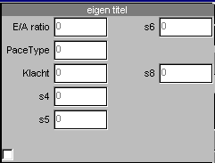

RF 2, Onset Systolische Bloeddruk
|
Met deze functie kunnen extra (numerieke) gegevens (handmatig) worden toegevoegd aan de opname. Als deze gegevens numeriek zijn, kunnen deze als gewone signalen worden geëxporteerd en als invoersignalen voor andere rekenfuncties worden gebruikt.
Als deze functie wordt opgenomen, wordt in het display venster automatisch onderstaande popup vermeld.
LET OP: deze functie mag slechts 1-malig in een meetprotocol voorkomen.

Alleen die velden worden vermeld, waarvan een omschrijving is ingevoerd.
Normaal gesproken kunnen de waarden alleen worden ingevoerd tijdens het maken van een opname. Tijdens het achteraf bekijken van de opname bestaat de mogelijkheid de waarden te wijzigen, echter dan moet wel eerst de checkbox linksonder worden aangeklikt.
Inputs: geen 
Parameters: titel, omschrijvingen 
Outputs: ingevoerde waarden (mits numeriek) 
© Instrumentele Dienst. Bijgewerkt op 8-12-1999.